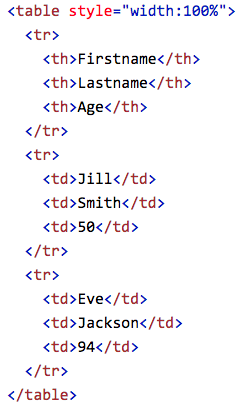
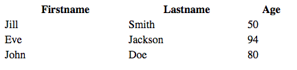
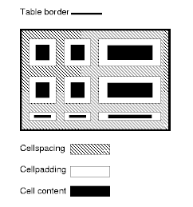

The development of the HTML <table> element as driven by human decision-making.
As a final project for WRIT 4662 at the University of Minnesota, I will be historicizing the development of the HTML <table> element as driven by human decision-making.
Historicizing, according to the article On the Relationship Between Old and New Technologies by Writing Studies researcher, Christina Haas (1996), is “the reciprocal process of placing computer literacy technologies into historical contexts and, in turn, using those historical contexts to more fully understand today's technologies" (p. 205).
Many people continue to use “old” technologies as long as those technologies continue to fit their needs. Yet, Haas reminds us of technology’s “constant yet changing nature” (p. 222). We must learn to adapt as technologies advance and open worlds of new possibilities. One of these advancements lies within computer coding.
Here, I will look at HTML, or Hypertext Markup Language, specifically the <table> tag. This site will trace the element’s cultural history and the implications of its current use, address the political and rhetorical movements motivating the development, and analyze how <table> is shaped by print media.
The element <table> is a tag from Hypertext Markup Language, or HTML, used to arrange data into rows and columns of cells. HTML is a computer language that describes the structure of Web pages using markup elements. Elements are represented by tags, which label pieces of content to render on a webpage.
The <table> tag forms a common table within the web page. (Figure 1 below).
| Header | Header | Header |
|---|---|---|
| cell | cell | cell |
| cell | cell | cell |
An HTML table contains several other elements for structure:
<th> defines a table header.
<tr> defines a table row.
<td> defines a table cell.
A standard HTML <table> structure looks as follows:

This code then displays on the web page as shown below:
The
Overall, <table> provides a structured format to arrange data. It has played a favorable role over the years, but has recently become viewed as an “old” tag in the eyes of modern web developers and designers.
Early websites were extremely basic, consisting mainly of tags for headers, paragraphs, and links. Visual considerations such as typography, imagery, and navigation were of little consideration (Kelly). As the World Wide Web began to expand, website “design” (or formatting) began it’s entry of importance.
The first documented proposal for HTML tables was in by Dave Raggett in 1993 with the mention of column structures. Tables first appeared as a generally-available web technology late in 1994 (Pearson). Initially, the element was designed to assist with structure:
“By the mid-90s, web design had evolved both in terms of structure and appearance. Designers began to use table-based layouts to organize their content, allowing for greater flexibility and creativity. Sites were still quite text heavy, but this text could now be divided into columns, rows, and other navigational elements” (Kelly).
The <table> element as a whole was greatly shaped by print media. Performance, Implementation, and Design Notes from w3.org state, “The HTML table model has evolved from studies of existing SGML tables models, the treatment of tables in common word processing packages, and a wide range of tabular layout techniques in magazines, books and other paper-based documents.” With the introduction of <table> elements, designers wanted to mimic print document structures because it is a good and familiar method to display content.
Web technology expert, Geir Wavik, notes, “Using tables to build structure is quite intuitive. We see tabular data every day, and the concept is well known.” We find examples of grid structure in all forms of print design: in magazine layouts, newspaper columns, rules of thirds in photography and art, stat sheets, textbooks, and so much more. It is not a surprise that designers would take a familiar and well-renowned design element into the new medium of web.
At first, the element did not offer mechanisms to control all aspects of visual table formatting (w3.org). However, it quickly gained popularity in the world of web, leading to the development of new display tags, which ultimately opened more doors for the look and feel of web design. This assists with rhetorical visualization for web users due to the fact that tables are easy to navigate, structured in a logical way, and have been used to communicate through many eras.
As Miya Kelly mentioned, “Designers began to use table-based layouts to organize their content, allowing for greater flexibility and creativity.” In early web design, entire websites were built from <table> tags, leading tables to become the template of design. Why?
The flexibility of cell attributes play a major role in the of <table> for page layout. In tables, the spacing between and within cells is easy to control (Figure 3). HTML tables also allow for tables to be nested, meaning one could create a table within a table, breaking apart content even further. As HTML became more developed with abilities to insert images, videos, and more, table structures became useful to display content in a methodological way. With the ability to control content sectioning, spacing, and locations, different elements could now be positioned in different sections of a web page, therefore web designers could easily structure their pages to their own desire.
On top of the entire page being build using <table> tags, other common uses for <table> include data sets, online menus, and collections of product information and orders. The element is useful for data that naturally belongs in a grid. Note how it is similar to print information: one may often see information such as sports statistics and product inventories in magazines, or a printed restaurant menu displayed as a grid. However, with web advancements, standard table uses have become skewed.
A popular web development site, w3schools.com, notes that “Historically, some Web authors have misused tables in HTML as a way to control their page layout… Tables should not be used for page layout!” Clearly, <table> use throughout the history of web design has been incorrect. It has been used to organize page content and layout rather than tabular data. We will learn more about <table> misuse and issues, as well as solutions, in the next section.
To reiterate, Diane Vigil, founder of DianeV Web Design Studio, states, “In the old days, websites were generally built in tables&em;the grid-like container with columns that became the de facto method of building website. Nowadays, using CSS and designing without tables is the better way to go.”
In December of 1999, “HTML 4.01 was released as a W3C Recommendation: ‘Tables should not be used purely as a means to layout document content as this may present problems when rendering to non-visual media.... To minimize these problems, authors should use style sheets to control layout rather than tables’" (W3C).
The introduction of Cascading Style Sheets (CSS) allowed for the separation of content and design. The positioning of elements determine how a user experiences and interacts with a site, so content design is vital. With the modern popularization of responsive web design, the structure of websites have had to be re-evaluated. Tables are inflexible; they worked decently in the 1990’s before there screen size variation was prevalent, but today, that design does not work well.
Bill Merikallio of Scott Design and Adam Pratt from Adobe Systems Incorporated point out a few other problems with using tables in web design in their article Why tables for layout is stupid:
Merikallio and Pratt continue on: “Modern browsers are much better at rendering Web standards and we don't need to use these archaic methods any more. Instead of nesting tables within tables and filling empty cells with spacer GIFs, we can use much simpler markup and CSS to lay out beautiful sites that are faster to load, easier to redesign, and more accessible to everyone.”
As a whole, using tables for web structure is considered “old school.” Not only is the code messy, the structure inflexible, cluttered, and inconsistent, but tables and CSS are redundant. CSS can control everything the same as a table can, but CSS is more adaptive and fluid.
So, what is the solution?
CSS and structural markup! We can keep the page content separated from the way it is presented through use of structural markup in our HTML documents and Cascading Style Sheets to lay out our pages.
Web designers and developers can still use tables if needed, particularly to display data, but in terms of structure, a lot of time, money, and frustration can be saved by avoiding table tags for structure.
Content here.
©2017 Sarah Canon - WRIT 4662W - University of Minnesota